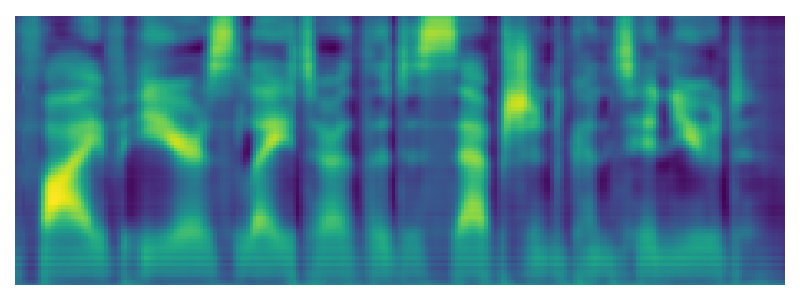

StableForm-TTS:
Improving Robustness of Diffusion-Based Zero-Shot Speech Synthesis via Stable Formant Generation
Abstract. Diffusion models have achieved remarkable success in text-to-speech (TTS), even in zero-shot scenarios. Recent efforts aim to address the trade-off between inference speed and sound quality, often considered the primary drawback of diffusion models. However, we find a critical mispronunciation issue is being overlooked. Our preliminary study reveals the unstable pronunciation resulting from the diffusion process. Based on this observation, we introduce StableForm-TTS, a novel zero-shot speech synthesis framework designed to produce robust pronunciation while maintaining the advantages of diffusion modeling. By pioneering the adoption of source-filter theory in diffusion TTS, we propose an elaborate architecture for stable formant generation. Experimental results on unseen speakers show that our model outperforms the state-of-the-art method in terms of pronunciation accuracy and naturalness, with comparable speaker similarity. Moreover, our model demonstrates effective scalability as both data and model sizes increase.
Model Overview
Overall architecture of StableForm-TTS. For brevity, the phoneme, pitch, and energy embedding layers are omitted.
Source-Filter Decomposition
StableForm-TTS synthesizes audio through excitation and formant pathways, and combines them for final output. Below are inference samples from both seen and unseen datasets.
| Speaker | Text | Reference | Ground Truth | Excitation (ùúá) | Refined Excitation | Formant | Final Output |
|---|---|---|---|---|---|---|---|
|
LibriTTS-R: 1183 (seen) |
The best physicians in America could do nothing for him. | ||||||
|
VCTK: 238 (unseen) |
Five years later, the deception continued. |  |
Visual Comparison
The examples of pronunciation improvement in zero-shot scenarios. The text beneath the mel-spectrogram indicates the ASR model’s transcription of the area enclosed within the red dotted box. We use the ML solver with 10 steps on the models trained on LibriTTS-R.
| Speaker | Text | Ground Truth | Grad-StyleSpeech | StableForm-TTS (ours) |
|---|---|---|---|---|
| 245 | We think all other measures are not exhausted. | |||
| 261 | Corporate banking would be based in Edinburgh. | |||
| 238 | People have been wonderful beyond belief. |
Zero-Shot Speech Synthesis
* LT-460: trained on LibriTTS train-clean-460, LT-R: trained on LibriTTS-R| Speaker | Text | Reference | Ground Truth | Ground Truth (voc.) | Grad-StyleSpeech (LT-460) | StableForm-TTS (LT-460) | Grad-StyleSpeech (LT-R) | StableForm-TTS (LT-R) |
|---|---|---|---|---|---|---|---|---|
| 238 | The early physical reports were clear. | PF 5 | PF 5 | PF 5 | PF 5 | |||
| PF 10 | PF 10 | PF 10 | PF 10 | |||||
| PF 50 | PF 50 | PF 50 | PF 50 | |||||
| PF 100 | PF 100 | PF 100 | PF 100 | |||||
| ML 5 | ML 5 | ML 5 | ML 5 | |||||
| ML 10 | ML 10 | ML 10 | ML 10 | |||||
| ML 50 | ML 50 | ML 50 | ML 50 | |||||
| ML 100 | ML 100 | ML 100 | ML 100 | |||||
| 248 | Naturally enough, the letter in question was an E. | PF 5 | PF 5 | PF 5 | PF 5 | |||
| PF 10 | PF 10 | PF 10 | PF 10 | |||||
| PF 50 | PF 50 | PF 50 | PF 50 | |||||
| PF 100 | PF 100 | PF 100 | PF 100 | |||||
| ML 5 | ML 5 | ML 5 | ML 5 | |||||
| ML 10 | ML 10 | ML 10 | ML 10 | |||||
| ML 50 | ML 50 | ML 50 | ML 50 | |||||
| ML 100 | ML 100 | ML 100 | ML 100 | |||||
| 302 | Of course we make mistakes, but we don't make too many. | PF 5 | PF 5 | PF 5 | PF 5 | |||
| PF 10 | PF 10 | PF 10 | PF 10 | |||||
| PF 50 | PF 50 | PF 50 | PF 50 | |||||
| PF 100 | PF 100 | PF 100 | PF 100 | |||||
| ML 5 | ML 5 | ML 5 | ML 5 | |||||
| ML 10 | ML 10 | ML 10 | ML 10 | |||||
| ML 50 | ML 50 | ML 50 | ML 50 | |||||
| ML 100 | ML 100 | ML 100 | ML 100 | |||||
| 225 | I always felt that I was in control of the match. | PF 5 | PF 5 | PF 5 | PF 5 | |||
| PF 10 | PF 10 | PF 10 | PF 10 | |||||
| PF 50 | PF 50 | PF 50 | PF 50 | |||||
| PF 100 | PF 100 | PF 100 | PF 100 | |||||
| ML 5 | ML 5 | ML 5 | ML 5 | |||||
| ML 10 | ML 10 | ML 10 | ML 10 | |||||
| ML 50 | ML 50 | ML 50 | ML 50 | |||||
| ML 100 | ML 100 | ML 100 | ML 100 | |||||
| 347 | Some have accepted it as a miracle without physical explanation. | PF 5 | PF 5 | PF 5 | PF 5 | |||
| PF 10 | PF 10 | PF 10 | PF 10 | |||||
| PF 50 | PF 50 | PF 50 | PF 50 | |||||
| PF 100 | PF 100 | PF 100 | PF 100 | |||||
| ML 5 | ML 5 | ML 5 | ML 5 | |||||
| ML 10 | ML 10 | ML 10 | ML 10 | |||||
| ML 50 | ML 50 | ML 50 | ML 50 | |||||
| ML 100 | ML 100 | ML 100 | ML 100 |
Ablation Study
We showcase the samples from the ablation study using the ML solver with 10 steps on the models trained on LibriTTS-R.
| Speaker | Text | Reference | Ground Truth | StableForm-TTS (ours) | w/o E-F generators | w/o Energy |
|---|---|---|---|---|---|---|
| 302 | The difference in the rainbow depends considerably upon the size of the drops, and the width of the colored band increases as the size of the drop increases. | |||||
| 225 | The Norsemen considered the rainbow as a bridge over which the gods passed from earth to their home in the sky. | |||||
| 234 | Yet the performance was not entirely convincing. | |||||
| 248 | It's also important that they are not seen as a soft option. |
Scalability Test
To examine the scalability of StableForm-TTS, we increase the English training dataset to 19,000 hours by including LibriTTS-R, LJSpeech, DailyTalk, HiFi-TTS, Common Voice, and MLS, while also doubling the model size to create the StableForm-large version (69.30M). Additionally, we provide several samples for comparing StableForm-large with five publicly available large-scale TTS models. We use the pretrained checkpoint for Bark, Tortoise, XTTS-v2, and YourTTS from the Coqui TTS toolkit, while we use the official code for VoiceCraft.
| Speaker | Text | Reference | Ground Truth | StableForm-large (ours) | Bark | Tortoise | VoiceCraft | XTTS-v2 | YourTTS |
|---|---|---|---|---|---|---|---|---|---|
| 261 | He put some colour into Scottish history. | ||||||||
| 302 | We're just a family working hard, working seven days a week. | ||||||||
| 335 | Clearly, she says, she would never resort to such devices. | ||||||||
| 326 | Another suggested the company should carry only pedestrians. | ||||||||
| 294 | This is a very common type of bow, one showing mainly red and yellow, with little or no green or blue. |